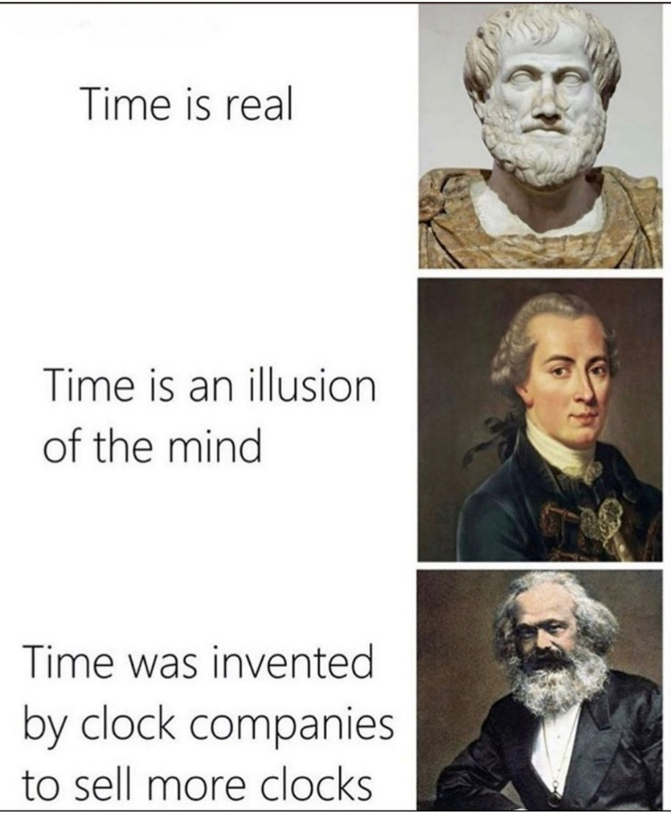
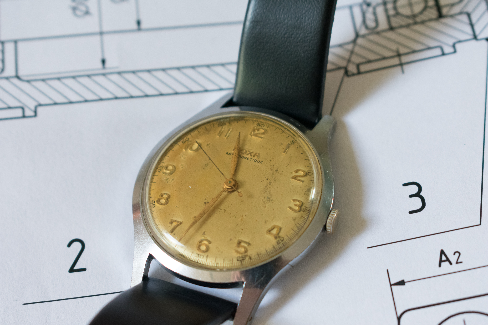
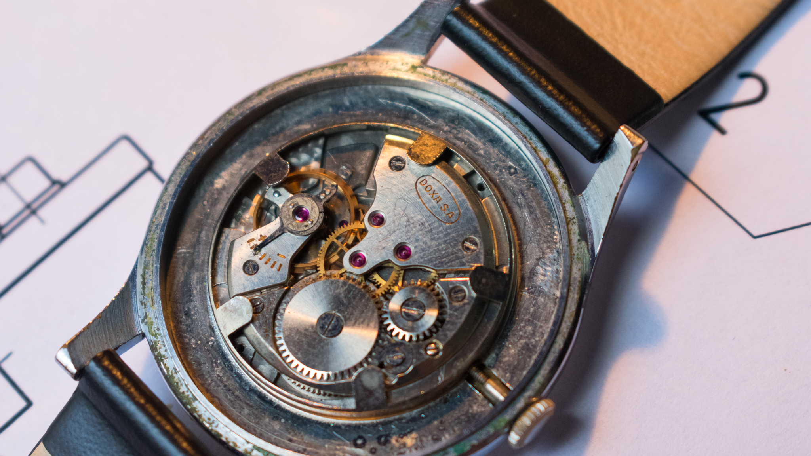
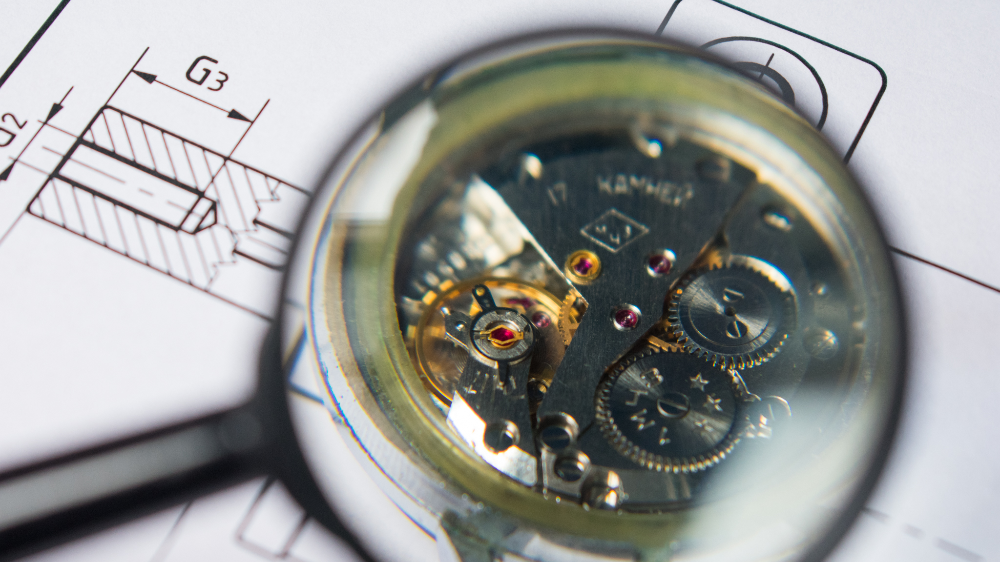

Az idő
Az idő koncepciója mindig is foglalkoztatott, sok tudományos értekezést, publikációt olvastam a témában, de valahogy mindig visszakanyarodtam a legkézzelfoghatóbb megtestesüléséhez: az órákhoz. 
Mérnöki szemmel nézve az órák rendkívül érdekes szerkezetek, talán ezért is kezdtek el érdekelni miután rájöttem, hogy mivel szertnék foglalkozni. Mostmár legalább 4-5 éve komolyan foglalkozom velük és gyűjtöm őket, jelenleg 5 darabból áll a gyűjteményem amit felváltva hordok. Több vintage órám is van, ezek közül a legértékesebb egy 1952-es Doxa karóra. 